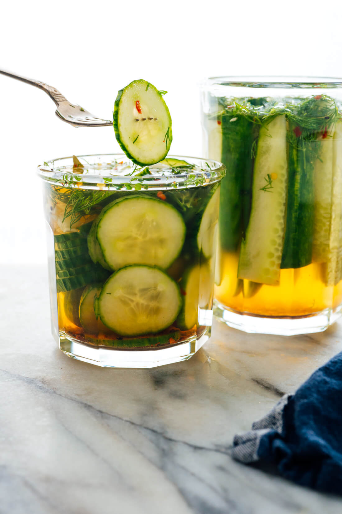

Homemade Pickles!

Awesome Homemade Pickles!
Here's one for you pickle lovers! I know there's plenty of you out there that are obsessed with pickles, and this one is for you guys!
This is perfect if you have any left over cucumbers and don't know what to do. Follow along and you'll be snackin' away in no time!
Ingredients
- 1 medium-to-large cucumber or 2 small cucumbers (ideally 12 ounces total)
- ½ cup water, at room temperature or cooler
- ½ cup rice vinegar
- 1 ½ tablespoons maple syrup or sugar
- 1 ½ teaspoons fine sea salt
- ¼ teaspoon red pepper flakes (optional, for heat)
- 20 twists of freshly ground black pepper
- 2 leafy sprigs of fresh dill, roughly chopped (about ¼ cup)
- 2 cloves garlic, peeled and smashed
- 1 bay leaf
Instructions
- For pickle rounds (“chips”), slice the cucumber(s) into thin rounds, about ⅛-inch thick. Or, for spears, slice them in half lengthwise, then slice the halves lengthwise into quarters, then slice the quarters lengthwise into eighths. If your spears are long like mine (from one long cucumber), slice them through the middle so they’re not too tall for your jar. Set aside.
- In a liquid measuring cup or bowl, combine the water, vinegar, maple syrup, salt, red pepper flakes (if using) and black pepper. Stir until most of the salt has dissolved into the liquid, about 30 seconds to 1 minute. Set aside.
- Place the cucumbers into a wide-mouth jar about 3 to 4 inches in diameter, tall enough to offer at least 1 inch of extra space on top (for pickle spears, it’s important that all the pickles fit snugly, vertically—a wide-mouth pint-sized mason jar would work well).
- Top the cucumbers with the dill and garlic. Tuck the bay leaf into the side of the jar. Pour the all of the liquid over the cucumbers so they’re fully submerged. Cover and refrigerate for at least 1 hour (for pickle rounds) or at least 3 hours (for pickle spears). The flavor will continue to develop over the next couple of days. These pickles will keep for up to 3 weeks in the refrigerator.